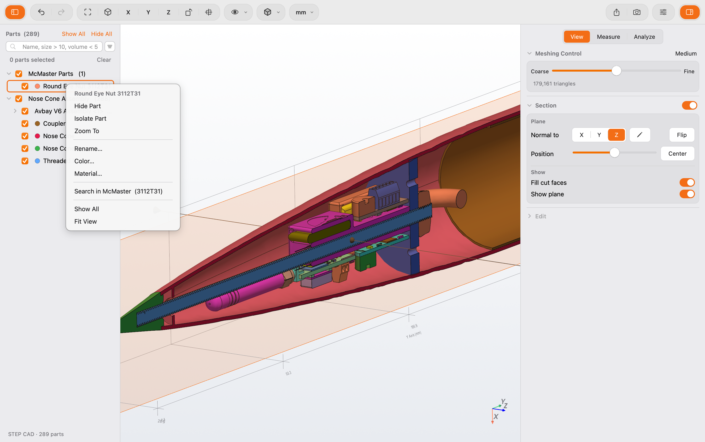
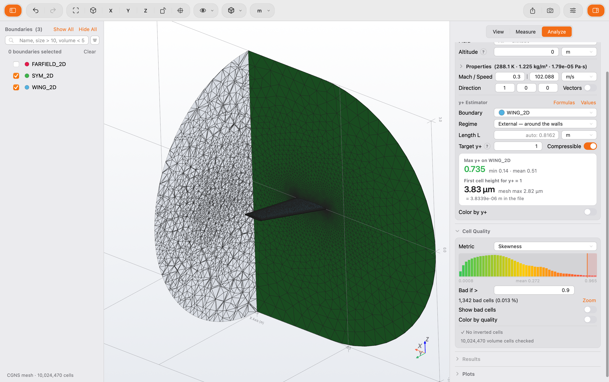
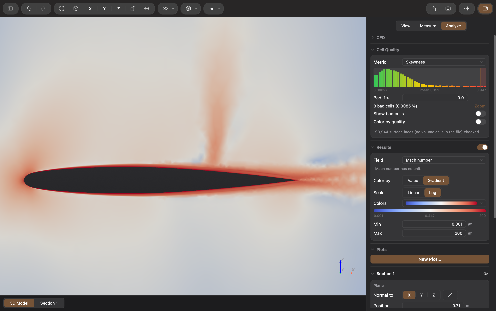
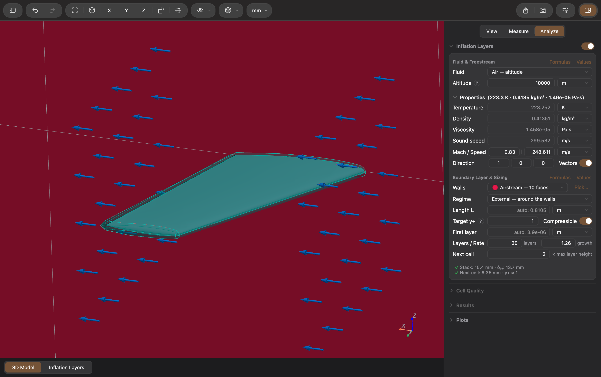
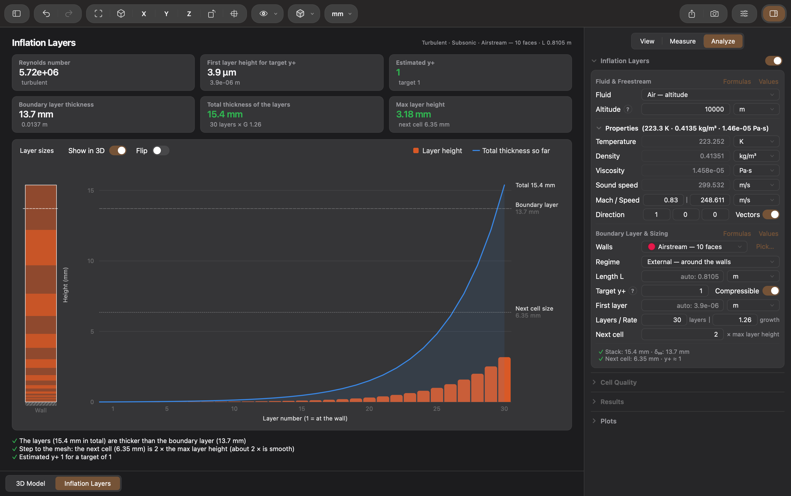

Meshes
- CGNS
.cgns— MIXED, polyhedral NGON / NFACE cells too - UGRID
.lb8 .b8 .lb4 .b4.ugrid— boundary names from.mapbc - Gmsh & Fluent
.msh— 2D or 3D, found from the file
A fast, native macOS viewer for CAD assemblies, CFD meshes, and simulation results.
Free and open source · Apple Silicon · macOS 13 or later

Double-click a STEP, CGNS, UGRID, .msh, STL, or DXF file. Cut it, measure it, color it by its results, and size its inflation layers.
Inspect CAD assemblies. Open STEP, IGES, and BREP files via OpenCASCADE. Filter parts by name, size, or volume, inspect materials, and adjust tessellation quality on the fly.

Cut through volume meshes. Inspect CGNS (including polyhedra), UGRID, Gmsh, and Fluent .msh files. Slice volume cells with an interactive section plane and highlight skewed or inverted cells.

Visualize CFD contours and plots. Load FUN3D and Tecplot .dat boundary results in dedicated tabs. Drag color bars anywhere over the view, switch between linear and log scales, and extract section plots.


Size inflation layers. Calculate y+ and first-cell height from flow conditions, preview total boundary layer thickness in 3D over walls, and export settings for OpenFOAM, Fluent, STAR-CCM+, or Pointwise.
Measure, select, and work natively. Pick nodes, edges, faces, or cells to measure exact radii, normals, and cell quality. Built for macOS with full Undo/Redo, trackpad zoom to cursor, dark mode, and VoiceOver.
Exact CAD, volume meshes, results, and drawings, all in one window.
.cgns — MIXED, polyhedral NGON / NFACE cells too.lb8 .b8 .lb4 .b4.ugrid — boundary names from .mapbc.msh — 2D or 3D, found from the file.dat — FUN3D boundary solutionsBinary .plt / .szplt are not read. With several time steps, the last one is shown.
.step .stp.iges .igs.brep .brpFrom SolidWorks, CATIA, NX, Creo, or Inventor, export STEP.
.stl .obj .ply.gltf .glb .wrl .vrml.dxf — layers, text, and dimensionsDownload the app, or run it with the Python you already have.
For Apple Silicon Macs running macOS 13 or later. Open the .dmg and drag Mesh Viewer onto Applications.
First launch. The app isn’t notarized, so macOS blocks it once. Try to open it, then go to System Settings → Privacy & Security and click Open Anyway. You only do this once.
Download the Latest ReleaseOn an Intel Mac, build it from source.
Already have Python? Skip the 1 GB app. cadquery-ocp is only needed for STEP / IGES / BREP, h5py only for CGNS.
pip install numpy pyvista pyvistaqt PySide6 h5py cadquery-ocp
git clone https://github.com/mdefontenay/MeshViewer.git
cd MeshViewer
python mesh_viewer.py path/to/file.stepBuild the app. Needs Python 3.12 or 3.13 from Homebrew or python.org. The quick build installs into /Applications.
brew install python@3.13
git clone https://github.com/mdefontenay/MeshViewer.git
cd MeshViewer
./build_app.sh./build_app.sh --standalone builds a self-contained app you can copy to another Mac.